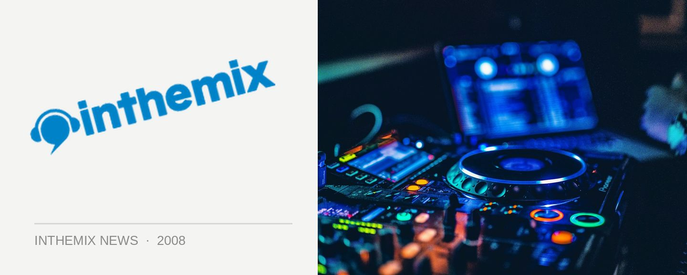

X-Qlusive to smash Australia this December
Australian hard dance fanatics have been waiting with baited breath for the details on when the revered Q-dance brand would be returning to our shores after they ripped ripping it up with a hard-as-nails debut earlier this year. While the delivery pigeon that was carrying the sought-after info got a little delayed on its way to the inthemix offices (suffering heart palpitations from too much hardstyle apparently), we can finally shed some light on the hard dance icon’s return!
X-Qlusive is one of the most popular events in Q-dance’s portfolio of massive European parties, and it’s set to debut in Australia this December. X-Qlusive will bring its special brand of hard dance insanity to Sydney on Friday 19th December and Melbourne on Saturday 20th December. Of course, we’ve been promised the signature Q-dance blend of mind-blowing lights, lasers and production, which we’ve come to associate with the brand.
Acting as ‘masters of ceremonies’ for the tour will be hardstyle masters Showtek, and they’ll be playing back-to-back with the remaining lineup. It’s the cream of the hardstyle crop, with Zany, Donkey Rollers and Walt all returning to smash it up alongside the South Stylers – who’ll be playing in Australia for the very first time.
X-Qlusive will be playing the following shows in December…
Friday 19th December – Hordern Pavilion, Sydney
Saturday 20th December – Festival Hall, Melbourne
Check out the full lineup of artists for the X-Qlusive tour…
Showtek
Zany
South Stylers (live)
Donkey Rollers (live)
Walt
Duro
Dutch Masters
Jowan V Dr Willis
Dr Willis
Nitrouz
Dv8
For proof the Q-dance crew know what they’re doing when it comes to hard dance parties, check out ITM’s photo galleries from the Sydney event earlier this year!